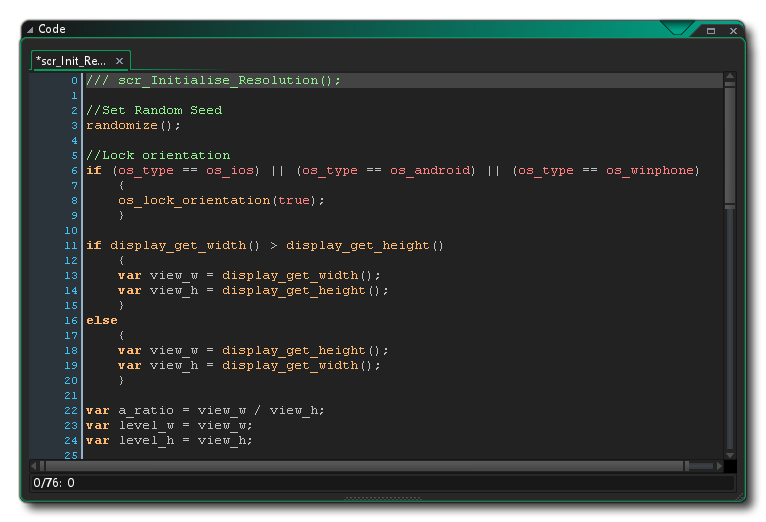

一个代码段包含一系列指令，也可称作 “语句”。这些指令在游戏运行时，由 GameMaker Studio 2 解释并执行，以实现某种功能。“某种功能” 可以简单到 2 加 2 等于 4，或者复杂到 “当敌人血量低于一定值就逃跑”。程序的结构可以千差万别，但最基本的通常都像下面这样：
<语句>;
<语句>;
...
语句之间用 “;” （英文分号）隔开，以避免变量声明时出错，并且能让你的代码清晰、轻巧，语句的种类包括： 变量声明、表达式、函数调用等。下面是代码块外观的更直观的表示，这是在 GameMaker Studio 2 脚本编辑器 中创建的 脚本： 
语句和函数分为多种，分别在帮助文件的不同章节加以说明。